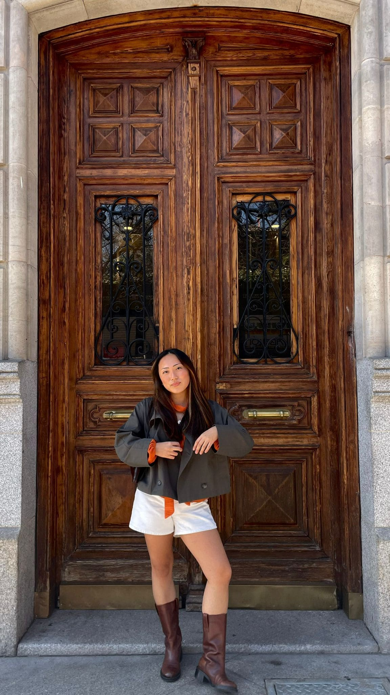
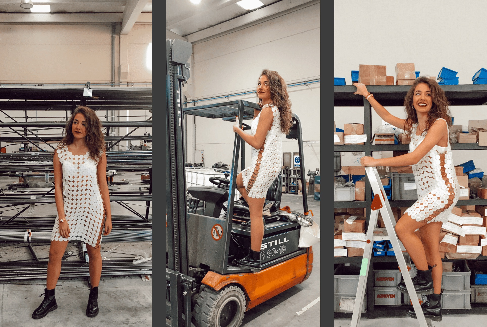
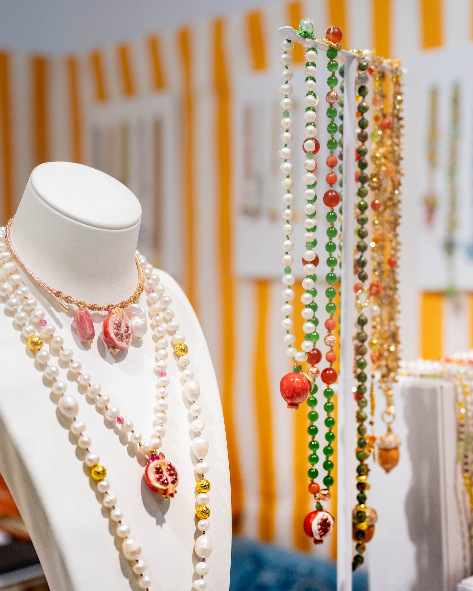
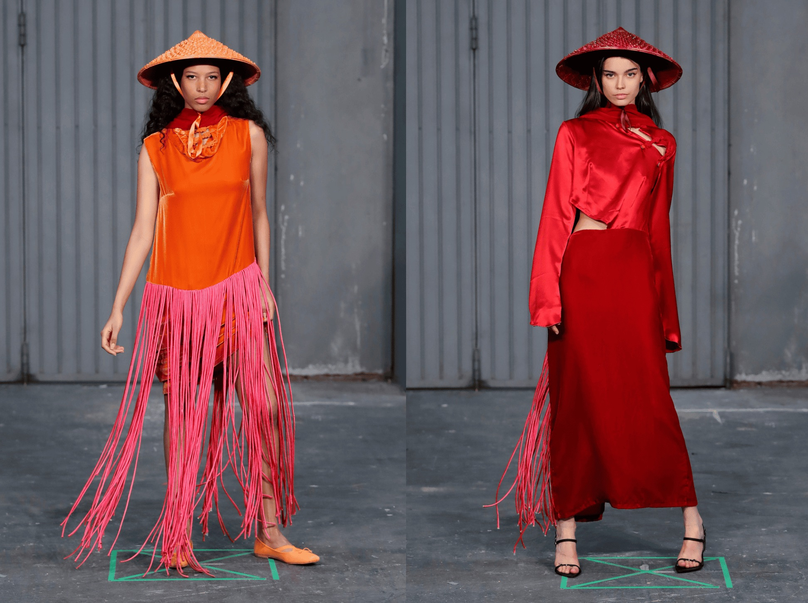
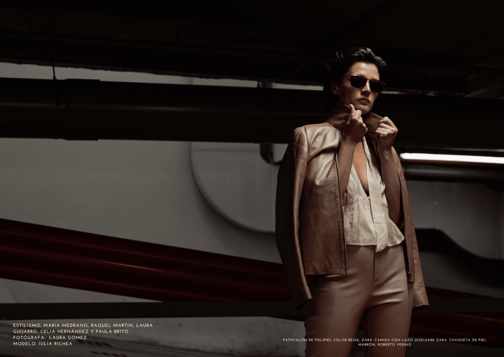
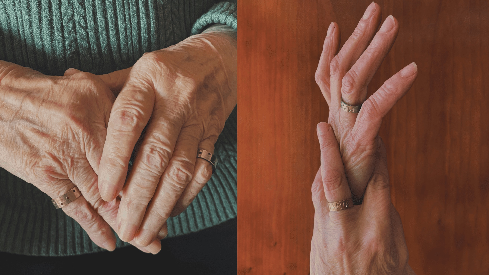
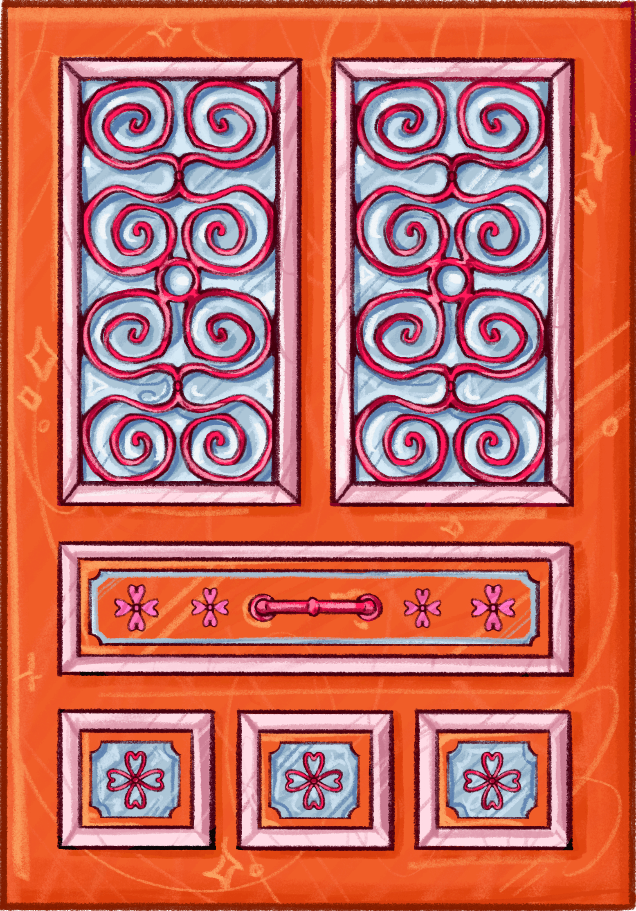

Maria Medrano

I’m Maria. I’m a Spanish girl, and I studied Fashion Design at the University of Madrid. When I finished my degree, I decided to do a master’s in Marketing Communication of Fashion. Right now, I am in New York working for a jewelry brand called Cashfana as a vendor in the Christmas Market of Union Square.
My mom always told me that when I was a child, I would wear one outfit in the morning and by the afternoon, I had already changed my outfit. I always made clothes for my dolls with my grandmother, so I think I have always had that vocation for fashion.
When I started to study design, I was so excited because it's a very creative and cool world. Two or three years into the degree, I started to have doubts if fashion design was truly what I liked. In university, we had to design and make the clothes. It’s not only the drafts, the moodboards, and the fun creative parts; it’s also countless amounts of sewing and all those nights without sleep.
So now, I am finding myself. I’ve become conscious that maybe my vocation is not strictly fashion design, and that's why I chose to pursue Marketing Communications within the fashion world.

Garment designed and sewn by Maria
In the fashion world, there are a lot of different jobs. For example, I wasn’t a vendor before, so I thought being a vendor was easy. I thought you only had to say, “Hi, this is my stand,” and then people buy some things.
Now, I really appreciate the vendor's work because it is so hard to sell something. You have to know the product very well, you have to investigate the brand, and you have to make sure you are saying the right things to the customer.

Cashfana Jewelry @ USQ Christmas Market
Fashion design in Spain is not as common as it is here in New York. I think in New York, they are more creative. In Spain, they focus more on the practice - how to sew, how to draw, and how to work with textiles. Here, they are more focused on the creative part, on investigating and knowing the history of a style or a specific designer.

Maria's final year collection
I’m not sure about what is going to happen in the future, but if I have to choose my path for these next few years, I hope to learn more about the fashion industry in marketing and communications. Maybe in the future I would create a new brand and agency for brand marketing.

Fashion Editorial styled by Maria
It's a very competitive world in the fashion industry. You have to be mentally strong, smart, and nice - it can open a lot of doors for you. Meet people. Don’t close your mind to meeting people who are different from you or who have different styles or views on life. You have to be mentally tough and surround yourself with people who support you.

Rings designed and hand-made by Maria on her grandmother
Instead of worrying about what others think, ask: "What do you want your future self to think of who you were?"

DATE: NOV 26, 2025
I met Maria when I was wandering around the USQ Christmas Market. I was immediately drawn to the chunky whimsical jewelry full of fruit charms. Maria was so kind in explaining the designs and background of the brand.
After getting to know her for a bit, I ended up going back the next day to ask if she wanted to be a part of this project.
She was so supportive and down to be apart of TPIK. I'm glad I had the courage to ask.